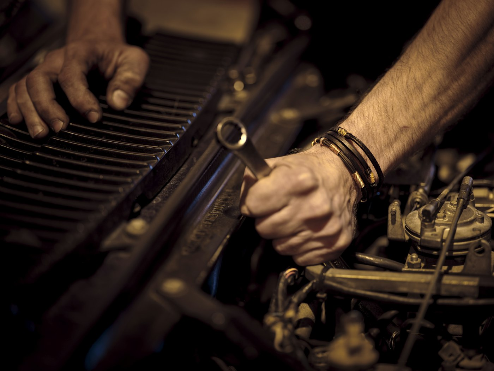

01
Er staat al iets
Een idee dat gepitcht en getest is, soms al een product of de eerste klanten, en de makers die het bouwden. Jij begint niet bij nul.

Schets
APK OpaMonteurs keuren je auto
 Sleutelklaar
Sleutelklaar
Vaste PrikStempelkaarten in je wallet